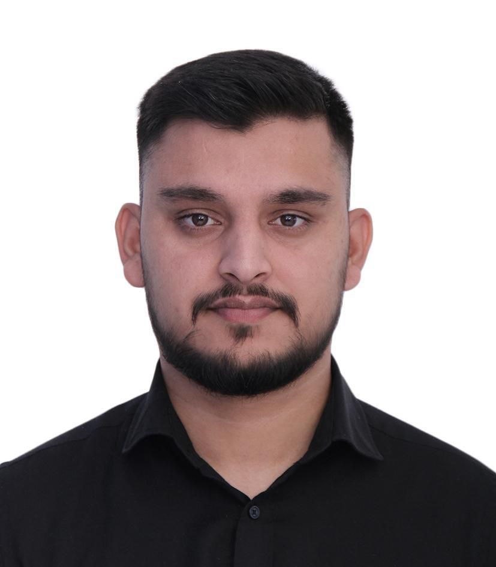

UAE-based telecom infrastructure professional with 6+ years of experience in NOC coordination, utility permits, authority approvals, project coordination, civil works documentation, and fiber optic network support.
Years UAE Experience
Authority Coordination
Permits Tracked
Telecom Projects

NOC Engineer | Project Coordinator
I am a coordination-focused telecom infrastructure professional bridging civil works execution, government authority approvals, utility coordination, and NOC operations. My experience covers telecom projects from design submission and permit issuance to execution support, reinstatement, and project closure across the UAE.
CCS Comservice FZ LLC, Abu Dhabi, UAE — Managing NOC applications, permits, authority coordination, project documentation, AutoCAD drawings, compliance follow-up, and telecom infrastructure support.
OMEN Communication Service, Dubai, UAE — Fiber installation, splicing, testing, cable pulling, duct installation, route verification, and as-built documentation.
Progressive experience from hands-on field work to authority-facing coordination and project management support.
Authority approvals, NOCs, permits, comments, renewals, and project clearance follow-up.
Coordination with ITC, AACM, TAQA, MCC, DU, ADNOC and other stakeholders.
Fiber optic networks, ducts, manholes, JRC connectivity, and civil infrastructure support.
Daily progress tracking, stakeholder follow-up, reporting, and execution support.
Route drawings, WGS84 coordinates, layouts, cross-sections, and technical submissions.
Method statements, risk assessments, reports, site photos, dashboards, and compliance files.
End-to-end permit lifecycle tracking from submission to approval and closure.
Cable laying, duct routes, JRC to JRC connectivity, testing and telecom infrastructure support.
Road crossing coordination, traffic permit support, trial pits, and utility clearance.
Method statements, risk assessments, drawings, reports, photos, and official submissions.
LinkedIn Learning certificate covering Large Language Models, Prompt Engineering, and Generative AI.
Technical drafting and documentation support for telecom infrastructure submissions.
Professional email writing, reporting, coordination, and authority communication.
Al Ain, United Arab Emirates